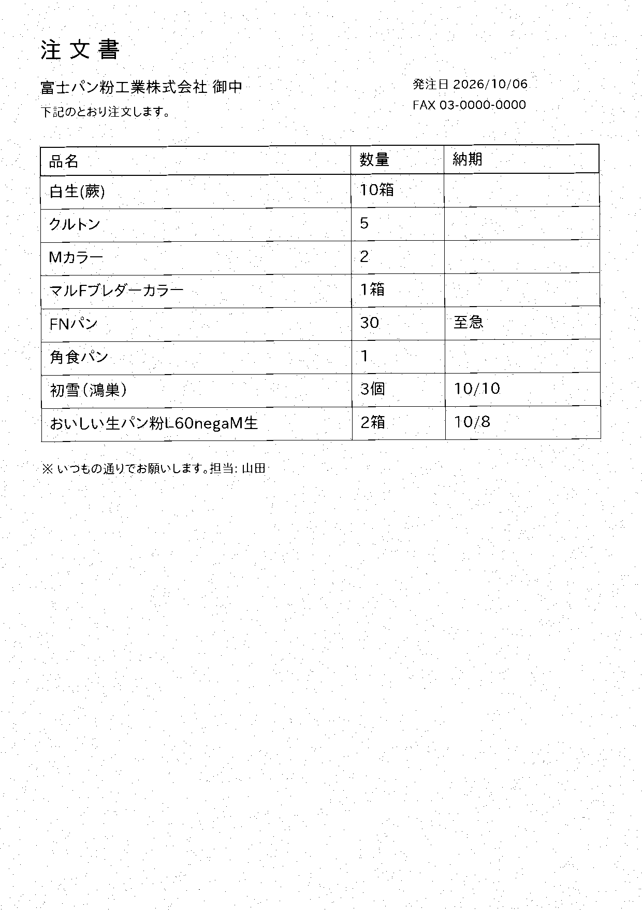

<!doctype html><html lang="ja"><meta charset="utf-8"><meta name="viewport" content="width=device-width,initial-scale=1">
<title>FAX注文書 確認画面</title>
<style>
:root{--bg:#f6f6f2;--sheet:#fff;--ink:#1d2433;--sub:#5b6477;--rule:#d9dce3;--ok:#2f6b4f;--ok-soft:#e3efe8;--warn:#b26a00;--warn-soft:#fff3dc;--bad:#b23a2a;--bad-soft:#f7e6e2;--indigo:#2b3f7a}
body{margin:0;background:var(--bg);color:var(--ink);font-family:"IPAPGothic","Noto Sans CJK JP",system-ui,sans-serif;font-size:14px}
header{padding:12px 20px;border-bottom:2px solid var(--ink);display:flex;justify-content:space-between;align-items:baseline;background:var(--sheet)}
h1{font-size:18px;margin:0} .sub{color:var(--sub);font-size:12px}
main{display:grid;grid-template-columns:1fr 1fr;gap:16px;padding:16px 20px}
.pane{background:var(--sheet);border:1px solid var(--rule);border-radius:6px;padding:12px;min-width:0}
img{max-width:100%;border:1px solid var(--rule)}
table{border-collapse:collapse;width:100%} th,td{border-bottom:1px solid var(--rule);padding:6px 8px;text-align:left;vertical-align:top}
th{font-size:11.5px;color:var(--sub)} td.n{text-align:right;font-variant-numeric:tabular-nums}
.b{display:inline-block;padding:1px 8px;border-radius:999px;font-size:11.5px;font-weight:600}
.ok{background:var(--ok-soft);color:var(--ok)} .warn{background:var(--warn-soft);color:var(--warn)} .bad{background:var(--bad-soft);color:var(--bad)}
select,input{font:inherit;padding:3px 6px;border:1px solid var(--rule);border-radius:4px;max-width:100%}
.foot{display:flex;gap:12px;align-items:center;margin-top:12px} button{font:inherit;padding:6px 14px;border-radius:6px;border:1px solid var(--indigo);background:var(--indigo);color:#fff;cursor:pointer}
.stat{color:var(--sub);font-size:12.5px}
td:nth-child(2){min-width:8em} td:nth-child(3){max-width:20em} td:nth-child(3) select{width:100%}
input[type=number]{width:4.5em} .b,td:nth-child(5),td:nth-child(6){white-space:nowrap}
@media(max-width:900px){main{grid-template-columns:1fr}}
</style>
<header><h1>FAX注文書</h1><span class="sub">読み取り結果の確認 → 直す → CSVを書き出す（販売管理に取り込む）</span></header>
<main>
<section class="pane"></section>
<section class="pane">
<table><thead><tr><th>#</th><th>読み取った品名</th><th>品番（候補から選ぶ）</th><th>数量</th><th>単位</th><th>納期</th><th>判定</th></tr></thead><tbody id="rows"></tbody></table>
<div class="foot"><button id="dl">CSVを書き出す</button><span class="stat" id="stat"></span></div>
</section></main>
<script>
const CAT={"FP-001": "おいしい生パン粉Ｌ60negaDＬ生", "FP-002": "FNパン", "FP-003": "角食パン(蕨)", "FP-004": "おいしい生パン粉Ｌ60negaM生", "FP-005": "クルトン", "FP-006": "微粉", "FP-007": "カラー生（蕨）", "FP-008": "特高級生", "FP-009": "Ｆ特生", "FP-010": "ＢＦ生", "FP-011": "白生（蕨）", "FP-012": "フジライトＡ", "FP-013": "Ｍカラー（蕨）", "FP-014": "フジカラー（蕨）", "FP-015": "WＫＯドライ", "FP-016": "WMTソフト", "FP-017": "W初雪", "FP-018": "初雪（鴻巣）", "FP-019": "フレンドシップ80", "FP-020": "ハーブパン粉", "FP-021": "マルFブレダーカラー", "FP-022": "マルFブレダー", "FP-023": "ミックス213生", "FP-024": "カラーMセミドライ(鴻巣)", "FP-025": "Mセミドライ(鴻巣)", "FP-026": "DL生", "FP-027": "FN生(蕨)", "FP-028": "マーチ", "FP-029": "P870", "FP-030": "おいしいパン粉", "FP-031": "フライエース"}; const ROWS=[{"品名_読み取り": "BER", "数量": 10, "単位": "箱", "納期": "", "品番": "", "確度": 0.25, "根拠": "不明", "候補": ["FP-010", "FP-004", "FP-001"], "読み取り確度": 55.3}, {"品名_読み取り": "クルトン", "数量": 5, "単位": "", "納期": "", "品番": "FP-005", "確度": 1.0, "根拠": "一致", "候補": ["FP-005", "FP-002", "FP-020"], "読み取り確度": 68.5}, {"品名_読み取り": "Mカラー", "数量": 2, "単位": "", "納期": "", "品番": "FP-013", "確度": 0.9, "根拠": "一致", "候補": ["FP-013", "FP-007", "FP-014"], "読み取り確度": 74.2}, {"品名_読み取り": "マルFブレダーカラー", "数量": 1, "単位": "箱", "納期": "", "品番": "FP-021", "確度": 1.0, "根拠": "一致", "候補": ["FP-021", "FP-022", "FP-013"], "読み取り確度": 66.2}, {"品名_読み取り": "FNパン", "数量": 30, "単位": "", "納期": "至急", "品番": "FP-002", "確度": 1.0, "根拠": "一致", "候補": ["FP-002", "FP-027", "FP-020"], "読み取り確度": 94.8}, {"品名_読み取り": "角食パン", "数量": 1, "単位": "", "納期": "", "品番": "FP-003", "確度": 0.9, "根拠": "一致", "候補": ["FP-003", "FP-002", "FP-020"], "読み取り確度": 76.7}, {"品名_読み取り": "初雪(鴻巣)", "数量": 3, "単位": "個", "納期": "10/10", "品番": "FP-018", "確度": 1.0, "根拠": "一致", "候補": ["FP-018", "FP-017", "FP-025"], "読み取り確度": 93.2}, {"品名_読み取り": "おいしい生パン粉L60negaM生", "数量": 2, "単位": "箱", "納期": "10/8", "品番": "FP-004", "確度": 1.0, "根拠": "一致", "候補": ["FP-004", "FP-001", "FP-030"], "読み取り確度": 89.5}];
const tb=document.getElementById('rows');
function badge(r){const c=r.確度>=0.9?'ok':r.確度>=0.6?'warn':'bad';const t=r.確度>=0.9?'一致':r.確度>=0.6?'要確認':'不明';return `<span class="b ${c}">${t} ${r.確度}</span>`}
ROWS.forEach((r,i)=>{const tr=document.createElement('tr');
 const opts=[...new Set([r.品番,...r.候補].filter(Boolean))].map(c=>`<option value="${c}" ${c===r.品番?'selected':''}>${c} ${CAT[c]||''}</option>`).join('')+'<option value="">（該当なし）</option>';
 tr.innerHTML=`<td>${i+1}</td><td>${r.品名_読み取り}</td><td><select data-i="${i}">${opts}</select></td><td class="n"><input type="number" value="${r.数量}" size="4" data-q="${i}"></td><td>${r.単位}</td><td>${r.納期}</td><td>${badge(r)}</td>`;
 tb.appendChild(tr)});
const need=ROWS.filter(r=>r.確度<0.9).length; document.getElementById('stat').textContent=`${ROWS.length}行中 ${need}行が要確認`;
document.getElementById('dl').onclick=()=>{const lines=['品番,品名,数量,単位,納期'];
 document.querySelectorAll('#rows tr').forEach((tr,i)=>{const code=tr.querySelector('select').value;const q=tr.querySelector('input').value;lines.push([code,(CAT[code]||ROWS[i].品名_読み取り),q,ROWS[i].単位,ROWS[i].納期].map(v=>`"${String(v).replace(/"/g,'""')}"`).join(','))});
 const blob=new Blob(["\ufeff"+lines.join('\n')],{type:'text/csv'});const a=document.createElement('a');a.href=URL.createObjectURL(blob);a.download='order.csv';a.click()};
</script></html>